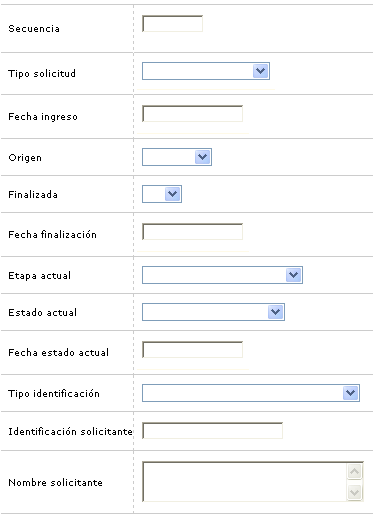
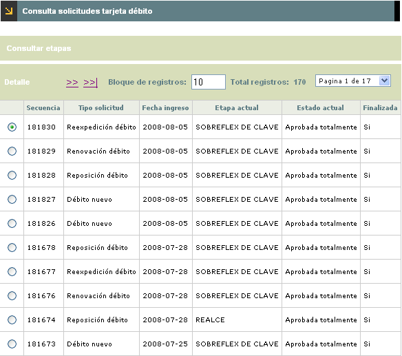
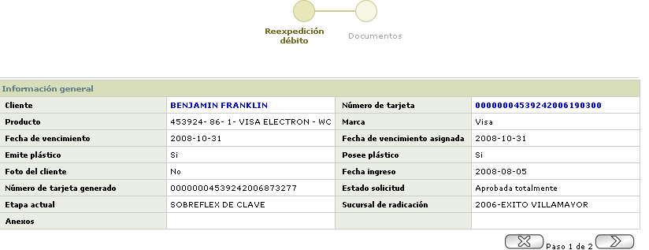
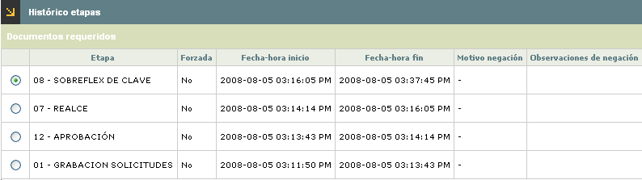

Consulta solicitudes
Esta opción permite consultar las diferentes solicitudes que se encuentran en cualquiera de las etapas definidas por la entidad. La forma filtra con base en el perfil del usuario el tipo de solicitudes que le son permitidas consultar y que pueden ser sólo las asociadas a productos Débito.
El formulario cuenta con un filtro de búsqueda y la opción Solicitudes en la parte superior.
Filtro: Se pueden realizar consultas a través de las siguientes opciones:

|
Secuencia |
Aparece el número consecutivo que identifica a cada una de las solicitudes que se han realizado en el sistema. |
|
Tipo solicitud |
Campo que ilustra la clase de solicitud que ha realizado el cliente; además posee lista de valores la cual puede ser utilizada como criterio para realizar consultas por los distintos tipos o clases de solicitudes. |
|
Fecha ingreso |
Corresponde a la fecha en la cual la solicitud ingresó a la última etapa en la cual se encuentra la solicitud. Si se requiere establecer la fecha en que ingresó la solicitud basta con presionar el botón especial de Consultar Etapas. |
|
Origen |
Permite identificar a través de cuál fuente ingresó la solicitud. Permite realizar consultas por los distintos orígenes mediante la lista de valores adjunta. |
|
Finalizada |
Campo que posee lista de valores que además de servir de criterio de consulta, indica si la solicitud ya finalizó o no, o aún hace transito por alguna de las etapas parametrizadas. |
|
Fecha finalización |
Campo en el que en formato YYYY-MM-DD ilustra la fecha en que efectivamente se surtió la última etapa parametrizada. |
|
Etapa actual |
Muestra la etapa del proceso en la cual se encuentra la solicitud cuando esta no está finalizada. |
|
Estado actual |
Campo que indica la condición en que se encuentra la solicitud al arribar a esta etapa, las cuales pueden ser: Aprobada totalmente o Aprobada parcialmente; de igual forma facilita la consulta por cualquiera de estas mediante la lista de valores adjunta. |
|
Fecha estado actual |
Campo que ilustra la fecha en la que la solicitud adquirió el estado actual. |
|
Tipo identificación |
Campo que despliega tanto el tipo de documento como el número del mismo, que identifica al solicitante. |
|
Identificación solicitante |
Campo que despliega tanto el tipo de documento como el número del mismo, que identifica al solicitante. |
|
Nombre solicitante |
Despliega el nombre del cliente solicitante. |
El sistema muestra el siguiente formulario de acuerdo a los datos ingresados en el filtro. Este formulario cuenta con la opción Detalle.

Detalle: Esta opción muestra el wizard correspondiente a la Consulta de solicitudes.

Consultar etapas: Si el usuario invoca la opción la consulta de etapas se despliega el siguiente formulario, el cual se va alimentando a medida que la solicitud avanza de etapa hasta ser Aprobada.
